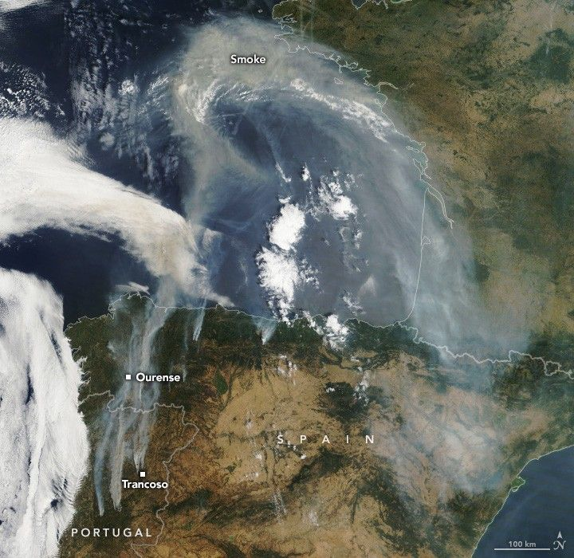

Smoke Blankets the Iberian Peninsula
Wildland fires in Spain and Portugal abruptly ramped up in mid-August 2025, amid the latest heatwave to affect the region this summer. The hot, dry conditions posed extreme fire danger to much of the region on August 15, 2025, when the MODIS (Moderate Resolution Imaging Spectroradiometer) sensor on NASA’s Terra satellite captured this image.
As of August 19, fires in Spain had scorched more than 382,000 hectares (944,000 acres) since the start of the year, according to the European Forest Fire Information System (EFFIS), which incorporates active fire detections from NASA’s Fire Information for Resource Management System. This burned area exceeds that of any year in the EFFIS records, which date back to 2006. According to an August 17 news report, firefighters battled around 20 blazes across the country. A dozen burned near Ourense, one of the country’s most affected areas.
In Portugal, fire consumed more than 347,000 hectares (857,000 acres) between the start of the year and August 19, which the EFFIS database showed was second only to 2017. According to a report from the European Commission’s Emergency Response Coordination Centre, 10 large fires were burning across the country around the time of this image. The largest, in Trancoso, had consumed more than 39,000 hectares.
Smoke continued to pass over the Iberian Peninsula in the days after this image, with carbon emissions reaching record levels in Spain and near-record levels in Portugal, according to the Copernicus Atmosphere Monitoring Service. Black carbon is a component of the fine particulate matter (PM2.5) emitted by wildfires, which can be harmful to people because the particles are small enough to penetrate the lungs and bloodstream. Smoke lofted higher in the atmosphere also reached France, the United Kingdom, and Scandinavia, combining with smoke from Canadian wildfires to create hazy skies.
Thousands of firefighters battled the blazes, which displaced tens of thousands of people from their homes, according to news reports. Among the infrastructure affected was the high-speed train service between Madrid and Galicia, which has been shut down for nearly a week.